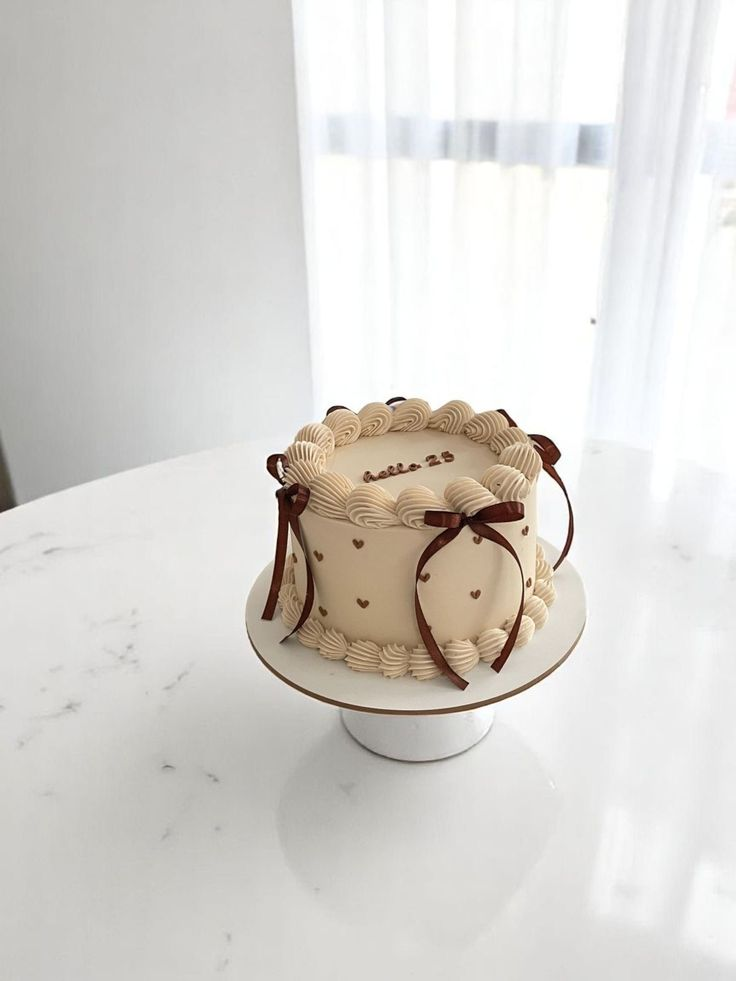
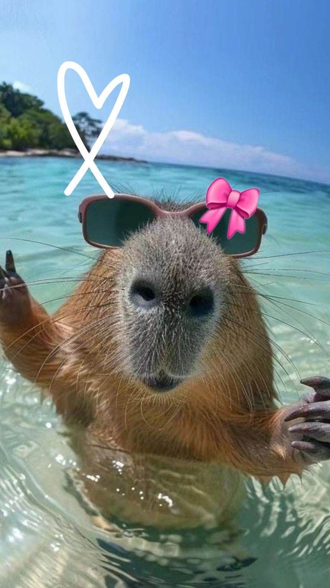
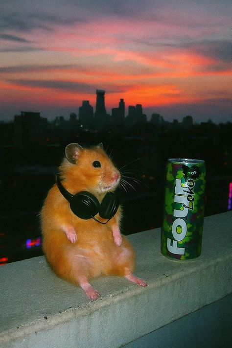
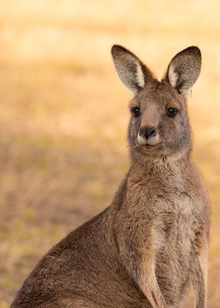
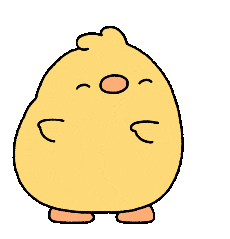

HTML Image


Image to Link

Floating Image
Kangaroos are marsupials from the subfamily Macropodinae. In common use, the term is used to describe the largest species from this family, the red kangaroo, as well as the antilopine kangaroo, eastern grey kangaroo, and western grey kangaroo. Kangaroos are indigenous to Australia and New Guinea.
Animated image

"HELLO WORLD"
Life brings us as many joyful moments as it does downfalls, and although there are days we wish there was a manual to follow, it simply wouldn’t be the same without the spontaneity. The journey of life may not become easier as we grow older, but we do seem to understand it better as our perspectives evolve.
Hello
Hello
Hello